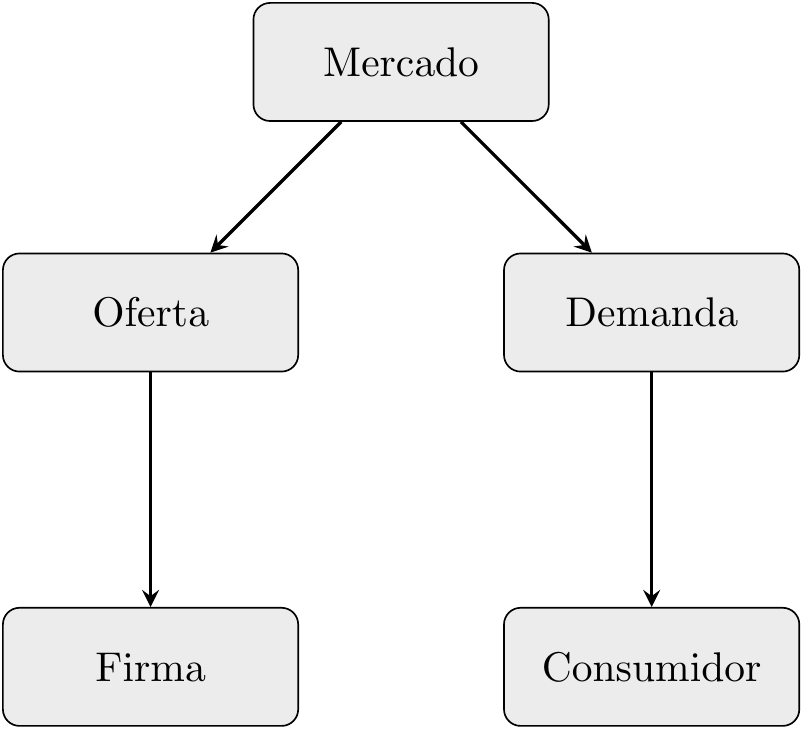
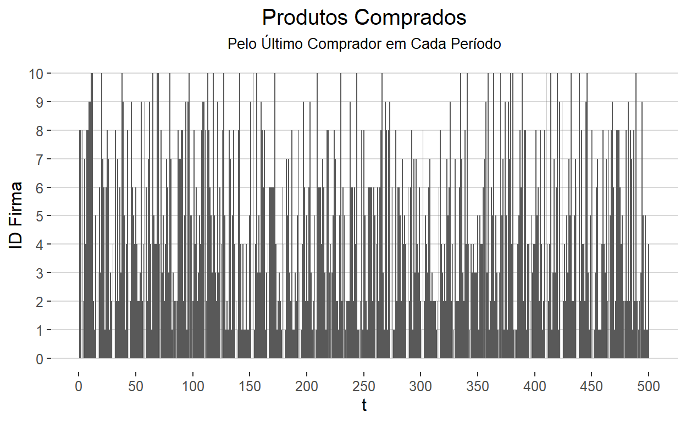

Introdução
Esse modelo é inspirado no artigo Product Quality in Markets where Consumers are Imperfectly Informed, de Smallwood e Conlisk (1979), no qual os autores procuram analisar a escolha de produtos em um mercado onde os consumidores não possuem informação perfeita a respeito da qualidade dos produtos. Nesse contexto, tais consumidores acabam recorrendo a uma regra de bolso que diz que a popularidade de um produto é um sinal da sua qualidade. Assim, a questão chave que o modelo pretende analisar é se os consumidores, incapazes de avaliar qualidades de forma individual, conseguem fazê-lo de forma coletiva.
O modelo parte de alguns pressupostos bem irrealistas, a fim de prover uma resposta clara:
- O preço é idêntico para todos os produtos.
- Não há diferenciação na distribuição.
- Não há propaganda.
- Não há acesso a informações de especialistas.
O modelo, resumidamente, funciona da seguinte maneira: as firmas, com seus produtos, possuem qualidades que diferem uma da outra, porém, de forma “escondida” — os consumidores não possuem acesso a essa informação. Com isso, os consumidores escolhem um produto para comprar e continuam com esse produto até que ele quebre, momento no qual compram um novo. A escolha do produto a ser comprado é aleatória, porém com probabilidades proporcionais aos market shares das firmas.
Modelo
A linha de eventos do modelo se inicia com os consumidores decidindo se vão ou não ao mercado comprar um novo produto. Tal decisão depende unicamente do estado do seu produto atual, se ele está quebrado ou funcionando:
\[ \begin{aligned} & produto = \begin{cases} produto \ atual & , \ se \ funcionando \\ produto \ novo & , \ se \ quebrado \\ \end{cases}\\ \end{aligned} \]
Todo produto, quando usado (ou seja, em cada período de tempo), possui uma probabilidade de quebrar (Breaking Down):
\[ \begin{aligned} & quebrado = \begin{cases} sim & , \ probabilidade = BD \\ não & , \ probabilidade = 1 - BD \\ \end{cases}\\ \end{aligned} \]
Quando o produto quebra, o consumidor precisa comprar um novo. Porém, ele não conhece a probabilidade de quebrar, BD, de cada produto, para usar como parâmetro de escolha. Por outro lado, ele pode observar os produtos dos outros consumidores. Assim, ele pode escolher qual produto comprar com base em probabilidades proporcionais aos market shares dos produtos (ou seja, quais proporções dos consumidores utilizam quais produtos):
\[ \begin{aligned} p_i = \frac{ms_i^\alpha}{\sum_{j=1}^n ms_j^\alpha} \end{aligned} \]
Essa equação apenas calcula a probabilidade de escolher um dado produto, baseado na proporção do market share desse produto. O parâmetro \(\alpha\) indica o peso dado ao market share na formação das probabilidades. Por exemplo:
- \(\alpha = 0\): todo \(p_i = 1\), independente do market share.
- \(\alpha \uparrow\): mais importante o market share na formação das probabilidades.
- \(\alpha \approx \infty\): A firma com maior market share possui \(p_i \approx 1\), e todas as outras \(p_j \approx 0\).
Com isso, \(\alpha\) pode ser entendido como a confiança que os consumidores têm no market share para selecionar o melhor produto, ou seja, no pressuposto de que o produto mais vendido é o de melhor qualidade.
Estrutura do modelo
O modelo, no LSD, possui a seguinte estrutura (de objetos, ou agentes):

O Mercado é o objeto origem, do qual descendem os objetos Oferta e Demanda. Por sua vez, Oferta possui o objeto Firma como descentende, e Demanda possui Consumidor como descendente.
Cada um desses objetos contêm um conjunto de variáveis (com seus lag indicados quando necessário) e parâmetros (cujos valores podem variar para cada cópia do objeto):
| Variável | Parâmetro | |
|---|---|---|
| Mercado | Init |
TotalUsers |
| Oferta | InitTrade |
alpha |
| Firma | NumUsers(1) ms_users(1) Visibility |
IdFirm BD Sales NumLost |
| Demanda | EndTrade |
- |
| Consumidor | ProdUsed(1) |
- |
Além disso, alguns dos objetos desse modelo contêm também funções, que são semelhantes às variáveis, mas que podem ser computadas diversas vezes dentro de um mesmo período de tempo da simulação. Assim como as variáveis, precisam ser invocadas com um bloco de Equação específico. As funções (e os objetos que as contêm) presentes nesse modelo são:
- Oferta:
Purchase. - Consumidor:
IsBroken.
Vejamos como é implementada cada Equação para essas variáveis e funções, juntamente com os parâmetros necessários.
Equações
O modelo inteiro é constituido por 9 equações (7 variáveis e 2 funções). Porém, dessas 9, 3 Equações (Init, InitTrade, EndTrade) retornam sempre o valor 1, sendo sua finalidade apenas configurar alguns parâmetros e outras variáveis. A variável NumUsers é a de maior interesse para análise do modelo, uma vez que retorna o número de consumidores de cada produto (Firma). A variável ms_users calcula a proporção de consumidores, baseada no número total. A variável Visibility utiliza o \(\alpha\) — que indica o quão importante é o market share — para gerar as probabilidade de cada produto ser comprado. As funções Purchase e IsBroken são necessárias para calcular a variável ProdUsed, que determina qual produto cada consumidor vai usar.
//#define EIGENLIB // uncomment to use Eigen linear algebra library
//#define NO_POINTER_INIT // uncomment to disable pointer checking
#include "fun_head_fast.h"
// do not add Equations in this area
MODELBEGIN
// insert your equations here, between the MODELBEGIN and MODELEND words
EQUATION("ProdUsed")
/*
Determine the product used by the consumer at each time step
*/
v[0] = V("IsBroken"); //breaks ?
if(v[0] == 1)
v[1] = V("Purchase"); //yes, buy a new produc
else
v[1] = VL("ProdUsed", 1); //no, keep on using the previous one
RESULT(v[1])
EQUATION("IsBroken")
/*
Check whether the product breaks down or not.
Return 1 if the product breaks or 0 if not.
*/
v[0] = VL("ProdUsed", 1); //product owned by the consumer at t-1
cur = SEARCH_CND("IdFirm", v[0]); //search the object with IdFirm
v[2] = VS(cur, "BD"); //read the value of the prob. to break down
if(RND < v[2]) //
{
v[1] = 1; //product broken
V("InitTrade"); //just to ensure NumLost is reset
INCRS(cur, "NumLost", 1);
}
else
v[1] = 0; //product not broken
RESULT(v[1])
EQUATION("Purchase")
/*
Make a purchase for the calling object (supposedly a consumer).
*/
cur1 = RNDDRAW("Firm", "Visibility"); //choose randomly one of the products
v[0] = VS(cur1, "IdFirm"); //return the ID of the chosen firm
V("InitTrade"); //ensure that firms are ready to sell
INCRS(cur1, "Sales", 1); //increase the Sales of the chosen firm
RESULT(v[0])
EQUATION("NumUsers")
/*
Number of users, computed, after the end of the trading period,
by summing to the previous users the new sales and removing the lost users
*/
V("EndTrade"); //ensure that buyers finished the shopping
v[0] = VL("NumUsers", 1); //former number of users
v[1] = V("Sales"); //sales at this time
v[2] = V("NumLost"); //lost users at this time
v[4]= v[0] + v[1] - v[2];
RESULT(v[4])
EQUATION("ms_user")
/*
Market shares of users, computed as the ratio of users over the total number of users
*/
v[0] = V("TotalUsers");
v[1] = V("NumUsers");
RESULT(v[1] / v[0])
EQUATION("Visibility")
/*
Visibility, implemented to avoid the math error of a power of 0.
*/
v[0] = V("alpha");
v[1] = VL("ms_user", 1);
if(v[1] == 0)
v[2] = 0;
else
v[2] = pow(v[1], v[0]);
RESULT(v[2])
EQUATION("InitTrade")
/*
Initialize the trading period. For each firm set to 0 the parameter Sales and NumLost
*/
CYCLE(cur, "Firm")
{ //for all firms set to 0 Sales and NumLost
WRITES(cur, "Sales", 0);
WRITES(cur, "NumLost", 0);
}
RESULT(1)
EQUATION("EndTrade")
/*
For each consumer ensures that the variable ProdUsed is updated so that Sales and NumLost are filled with the correct values
*/
CYCLE(cur, "Consumer")
VS(cur, "ProdUsed");
RESULT(1)
EQUATION("Init")
/*
Initialize demand. It assumes that initially there is only 1 consumer. ms_users[0] are the prob of first purchase
*/
cur = SEARCH("Demand");//search the object Demand
v[0] = V("TotalUsers");//number of consumers
ADDNOBJS(cur, "Consumer", v[0] - 1);//create new objects
CYCLES(cur,cur1, "Consumer")
{
v[1] = V("Purchase");
WRITELS(cur1, "ProdUsed", v[1], t - 1);//replace the existing value
}
PARAMETER //transform the variable into a param
RESULT(1)
MODELEND
// do not add Equations in this area
void close_sim( void )
{
// close simulation special commands go here
}Vamos analisar cada um dessas equações com mais detalhes. Lembrando que os modelos escritos no LSD são compostos por um conjunto de Equações que são atualizadas em cada período de uma simulação. Essas equações descrevem o comportamento das variáveis (ou funções) que fazem parte do modelo.
EQUATION(“ProdUsed”)
Essa equação tem como finalidade indicar, em cada período de tempo, qual o produto (Firma) usado por cada um dos consumidores. Para tanto, ela verifica se o produto atual do consumidor em questão está quebrado ou não (por meio da variável IsBroken). Caso esteja quebrado, é o utilizado a função Purchase para comprar um novo produto; caso não esteja quebrado, é utilizado o mesmo produto que no período anterior, por meio da própria variável prodUsed, com um lag de 1 período. A equação retorna o ID da firma, informado pelo parâmetro IdFirm.
EQUATION("ProdUsed")
/*
Determine the product used by the consumer at each time step
*/
v[0] = V("IsBroken"); //breaks ?
if(v[0] == 1)
v[1] = V("Purchase"); //yes, buy a new produc
else
v[1] = VL("ProdUsed", 1); //no, keep on using the previous one
RESULT(v[1])Por exemplo, seja uma simulação com 500 períodos, \(\alpha = 0.5\), 10 Firmas e 10000 consumidores. Vejamos o comportamento da variável ProdUsed para 2 consumidores:

EQUATION(“IsBroken”)
Essa equação, que é de uma função (não uma variável), tem como finalidade indicar se o produto usado por um consumidor irá quebrar no período corrente. Para tanto, primeiramente, ela verifica qual foi o produto usado no período anterior, assim como o ID da sua Firma produtora. Com isso, a equação verifica a probabilidade que esse produto tem de quebrar (com base no parâmetro BD referente à Firma produtora). Então é feito um sorteio aleatório, com distribuição uniforme entre 0 e 1 (Macro RND): caso o valor seja menor que o parâmetro BD, o produto está quebrado nesse período; caso seja maior, o produto não está quebrado. A equação retorna 0 (produto não quebrado) ou 1 (produto quebrado). Além disso, quando o produto está quebrado, a equação faz um acréscimo unitário no parâmetro NumLost da Firma em questão — através da Macro INCRS(obj, “x”, value) que, no caso, fica INCRS(cur, “NumLost”, 1).
EQUATION("IsBroken")
/*
Check whether the product breaks down or not.
Return 1 if the product breaks or 0 if not.
*/
v[0] = VL("ProdUsed", 1); //product owned by the consumer at t-1
cur = SEARCH_CND("IdFirm", v[0]); //search the object with IdFirm
v[2] = VS(cur, "BD"); //read the value of the prob. to break down
if(RND < v[2]) //
{
v[1] = 1; //product broken
V("InitTrade"); //just to ensure NumLost is reset
INCRS(cur, "NumLost", 1);
}
else
v[1] = 0; //product not broken
RESULT(v[1])Por exemplo, seja uma simulação com 500 períodos, \(\alpha = 0.5\), 10 Firmas e 10000 consumidores. Vejamos o comportamento da função IsBroken para 1 consumidor. Lembrando que a probabilidade de quebrar depende do parâmetro BD, que nesse exemplo foi definido com o valor de 10% para a Firma 1, 11% para a Firma 2, …, 19% para a Firma 10. Em cada período de tempo, o produto possuído pelo consumidor irá determinar a probabilidade de quebrar.

EQUATION(“Purchase”)
Assim como a EQUATION(“IsBroken”), essa equação também é de uma função. Funções podem ser chamadas diversas vezes em um mesmo período de tempo, porém apenas a última vez é salva. No caso de IsBroken, isso não foi muito importante, pois cada consumidor a chamava apenas uma vez por período, sendo salvos todos seus valores para cada consumidor. No caso de Purchase, essa restrição é importante, pois os valores pertencem ao objeto Oferta, que possui apenas 1 cópia. Assim, é possível que diversos consumidores chamem a função Purchase, porém apenas o valor do último que o fizer será salvo.
A equação funciona da seguinte maneira: primeiramente, sorteada-se uma firma, com probabilidades iguais às suas Visbility (que dependem do market share); depois, guarda-se o ID dessa firma; por fim, faz-se um incremento unitário no parâmetro Sales dessa firma. A equação retorna o ID da firma sorteada.
EQUATION("Purchase")
/*
Make a purchase for the calling object (supposedly a consumer).
*/
cur1 = RNDDRAW("Firm", "Visibility"); //choose randomly one of the products
v[0] = VS(cur1, "IdFirm"); //return the ID of the chosen firm
V("InitTrade"); //ensure that firms are ready to sell
INCRS(cur1, "Sales", 1); //increase the Sales of the chosen firm
RESULT(v[0])Por exemplo, seja uma simulação com 500 períodos, \(\alpha = 0.5\), 10 Firmas e 10000 consumidores. Vejamos o comportamento da função Purchase (para o último consumidor que a chamar, em cada período).
EQUATION(“NumUsers”)
Essa equação tem como finalidade indicar o número de usuários de cada produto (firma) ao fim de cada período, após computar as adições (vendas para novos usuários) e subtrações (perdas de usuários devido à quebra de produtos) de consumidores. Para tanto, ela simplesmente verifica o número de usuários (de cada firma) no período anterior, o número de vendas no período corrente e o número de usuários perdidos também no período corrente, e computa o novo número de usuários.
EQUATION("NumUsers")
/*
Number of users, computed, after the end of the trading period,
by summing to the previous users the new sales and removing the lost users
*/
V("EndTrade"); //ensure that buyers finished the shopping
v[0] = VL("NumUsers", 1); //former number of users
v[1] = V("Sales"); //sales at this time
v[2] = V("NumLost"); //lost users at this time
v[4]= v[0] + v[1] - v[2];
RESULT(v[4])Por exemplo, seja uma simulação com 500 períodos, \(\alpha = 0.5\), 10 Firmas e 10000 consumidores. Vejamos o comportamento da variável NumUsers para cada firma. Lembrando que a probabilidade de quebrar depende do parâmetro BD, que nesse exemplo foi definido com o valor de 10% para a Firma 1, 11% para a Firma 2, …, 19% para a Firma 10.
Como o gráfico mostra, quanto maior o parâmetro BD (probabilidade de o produto quebrar) da firma, menor é número de usuários que ela consegue manter no longo prazo. Essa divergência é rapidamente atingida no começo e depois mantida ao longo do tempo. Como existem 10000 consumidores e 10 Firmas, inicialmente cada firma fica com um número de consumidores em torno de 1000. Um exame dos primeiros períodos mostra essa rapidez:

EQUATION(“ms_user”)
Essa equação apenas divide o número de usuários de cada Firma, NumUsers, pelo total de usuários, parâmetro TotalUsers.
EQUATION("ms_user")
/*
Market shares of users, computed as the ratio of users over the total number of users
*/
v[0] = V("TotalUsers");
v[1] = V("NumUsers");
RESULT(v[1] / v[0])O gráfico dessa variável é igual ao de NumUsers, porém com uma escala diferente, refletindo a porcentagem e não o número total de usuários de cada Firma.
EQUATION(“Visibility”)
Essa equação tem como finalidade indicar a visibilidade de cada produto (firma) ao fim de cada período, após computar as adições (vendas para novos usuários) e subtrações (perdas de usuários devido à quebra de produtos) de consumidores. O mark share — que depende das vendas e perdas — é a base da visibilidade. Mais especificamente, essa é calculada elevando-se o market share (no período anterior) ao expoente alpha. Uma Exceção que a equação implemente é que caso o market share seja igual a zero, a visibilidade também será zero. Isso é feito para eliminar a possibilidade de uma Firma possuir market share zero mas visibilidade igual a um — caso o alpha seja igual a zero.
EQUATION("Visibility")
/*
Visibility, implemented to avoid the math error of a power of 0.
*/
v[0] = V("alpha");
v[1] = VL("ms_user", 1);
if(v[1] == 0)
v[2] = 0;
else
v[2] = pow(v[1], v[0]);
RESULT(v[2])Por exemplo, seja uma simulação com 500 períodos, \(\alpha = 0.5\), 10 Firmas e 10000 consumidores. Vejamos o comportamento da variável Visibility para cada firma. Como dito, em cada período, o valor dessa variável é igual ao market share elevado à potencia alpha, que no caso é igual 0.5. Ou seja, o valor de Visibility, em cada período, é simplesmente a raiz quadrada do market share. Portanto, o gráfico terá o mesmo comportamento, porém mais “esticado” — uma vez que os valores estão entre 0 e 1.

Dessa forma, a Visibility deriva diretamente do market share, que deriva do NumUsers, que depende, em cada período, do número de Sales e de NumLost, que são dois parâmetros das Firmas.
Sales é determinado pela equação (função) de Purchase: cada consumidor que teve um produto quebrado chama essa função, e a firma escolhida para realizar a venda é determinada por um sorteio aleatório com probabilidades iguais a Visibility.
NumLost é determinado pela equação (função) de IsBroken: todo consumidor chama essa função em todos os períodos, e caso o produto esteja quebrado (possui probabilidade BD de quebrar, que varia de produto para produto) a Firma produtora desse produto perde um consumidor.
Assim:
NumLosté maior para Firmas comBDmaior, o que leva a um menor market share.Salesé maior para Firmas com maiorVisibility, o que leva a um maior market share.
Para entender melhor essa dinâmica, vamos supor que \(\alpha = 0\) e, portanto, todas as firmas possuem Visiblity constante e igual a 1. Nesse caso, Sales será semelhante para todas as Firmas — todas terão a mesma probabilidade de serem sorteadas. Assim, o NumUsers, e o market share, irá depender predominantemente do NumLost. Como esse depende do parâmetro BD, que cresce de 10% a 19% entre as 10 Firmas, a Firma com maior BD terá o maior NumLost e, poranto, o menor market share. Porém, isso ocorre de forma cada vez menor, já que tanto menor o NumUsers menor o NumLost. Isso explica a curva acentuada nos primeiros períodos e depois uma variação em torno de uma média no longo prazo.
Vejamos um exemplo: a Firma 1 possui \(BD = 0.1\) e a Firma 2 \(BD=0.19\); digamos que no primeiro período cada Firma possua mil consumidores. Assim, em média, a Firma 1 perde 100 consumidores por período e a Firma 2 per 190; após 100 períodos, a Firma 1 possui 2000 consumidores e a Firma 2 possui 500; nessa altura, em cada período, a Firma 1 perde 200 consumidores e a Firma 2 perde 95. Portanto, por mais que a Firma 1 perca menos usuários proporcionalmente, em números totais ela perde mais por possuir mais consumidores. Se todo o modelo se resumisse apenas a isso, seria de se esperar os que números de consumidores dessas duas firmas se estabilizasse em torno de 1600 para a Firma 1 e 800 para a Firma 2, pois dessa forma elas perderiam, em média, o mesmo número de consumidores por período.
Para o caso em que \(\alpha \ne 0\), como os exemplos mostrados ao longo do texto (\(\alpha=0.5\)) vale a mesma dinâmica, porém, como as Visibility irão divergir, haverá divergência no Sales e, por fim, no market share. Isso irá acentuar a diferença entre números de consumidores para cada Firma no longo prazo, porém a dinâmica permanece a mesma: uma grande diferenciação nos primeiros períodos, depois uma estabilidade causada pelo NumLost.
As últimas 3 equações (InitTrade, EndTrade, Init) retornam sempre 1 e servem para configurar o modelo.
EQUATION(“InitTrade”)
Essa equação tem como finalidade configurar o período de negocioação. Os parâmetros Sales e NumLost computam os ganhos e perdas de consumidores em cada período, portanto precisam ser zeradas ao início de cada período. Essa equação faz apenas isso. Ela ajusta para 0 o valor desses parâmetros para cada uma das firmas.
EQUATION("InitTrade")
/*
Initialize the trading period. For each firm set to 0 the parameter Sales and NumLost
*/
CYCLE(cur, "Firm")
{ //for all firms set to 0 Sales and NumLost
WRITES(cur, "Sales", 0);
WRITES(cur, "NumLost", 0);
}
RESULT(1)EQUATION(“EndTrade”)
Essa equação apenas faz uma leitura do produto usado, ProdUsed, por cada consumidor, ao fim de cada período, para assegurar que Sales e NumLost sejam preenchidos com os valores corretos.
EQUATION("EndTrade")
/*
For each consumer ensures that the variable ProdUsed is updated so that Sales and NumLost are filled with the correct values
*/
CYCLE(cur, "Consumer")
VS(cur, "ProdUsed");
RESULT(1)EQUATION(“Init”)
Essa equação inicializa a demanda. Primeiramente, ela associa o objeto “Demanda” a um ponteiro cur e guarda o valor do parâmetro TotalUsers — que é ajustado pelo modelador no início da simulação. A equação então cria um número de objetos, chamados “Consumidores”, igual a TotalUsers menos 1 (ela assume que o modelo começa com 1 consumidor), e aloca esse objetos como descendentes do objeto “Demanda”, que ela guardou no ponteiro cur. Após isso, equação então faz um ciclo para chamar a função Purchase para cada um dos consumidores recém criados, e utiliza o valor retornado por Purchase para substituir o valor de ProdUsed no período \(t-1\), que foi inicialmente configurado pelo modelador para ser 0 (para esse primeiro e único consumidor existente antes dessa equação ser chamada). Após tudo isso, essa variável Init é transformada em um parâmetro.
EQUATION("Init")
/*
Initialize demand. It assumes that initially there is only 1 consumer. ms_users[0] are the prob of first purchase
*/
cur = SEARCH("Demand");//search the object Demand
v[0] = V("TotalUsers");//number of consumers
ADDNOBJS(cur, "Consumer", v[0] - 1);//create new objects
CYCLES(cur,cur1, "Consumer")
{
v[1] = V("Purchase");
WRITELS(cur1, "ProdUsed", v[1], t - 1);//replace the existing value
}
PARAMETER //transform the variable into a param
RESULT(1)Conclusão
Esse modelo explora a competição entre firmas, por consumidores em um mercado no qual não há informação perfeita e esses consumidores precisam tomar suas decisões com base numa regra de bolso, que no caso é assumir que a firma com maior market share possui o melhor produto. Porém, o modelo assume que o market share depende da qualidade do produto, uma vez que a probabilidade desse quebrar influencia diretamente no número de consumidores da firma. A visibilidade da firma acentua as diferenças de market share entre essas, porém o que determina a dinâmica do modelo de forma mais preponderante é o fato de que as probabilidades BD definem o número de consumidores perdidos e portanto, estabelecem o formato das trajetórias dos market shares.